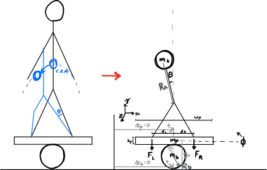

Board Balancing Technical Project
A personal attempt to apply linear control theory to a real-world system.
Motivation
I carried out this project in a cabin during Thanksgiving break with my family. I was in the middle of my first official Controls course, and I guess my excitement for the subject prompted me to dedicate some time to mathematical derivations and programming instead of the mountains and the hot tub…
Model Description
Basically, the challenge is to have a person balance on top of a board, which in turn is balancing on top of a cylinder (like a two liter bottle or something). I made this physical setup with an old skateboard for fun and to improve my balance in dynamic situations.
Schematic:

Assumptions:
- There is no slip between the ground, the cylinder, and the board.
- The finite weight of the person balancing on the board can be shifted between the two feet with negligible rotational inertia effects from the shifting.
- Motion confined to the plane.
- All objects in the system act as rigid bodies.
Equations of Motion and Controller Derivation:
I used the Euler-Lagrange method to model the dynamics of the board balancing system, and decided to try using a state space feedback controller with an integrator to control the system to commanded cylinder rotation angles.
All of my work and the final dynamics/controller equations can be found in the notes I made over Thanksgiving break. I thought it would be fun to include my hand-written notes to demonstrate both my meandering efforts and the way I like to take notes on all kinds of subjects. There are a lot of colors and pasted images involved, as I prefer to gather information from all around the internet to fill in emergent gaps in my understanding as I go.
Matlab Implementation
To test out my derived dynamics and controller, I created a simulation in Matlab that models the dynamics of the board balance system and controls it to commanded cylinder angle values. The following sections give code listings for all of the blocks in the above block diagram.
Parameters
This code defines all physical parameters for the system, the linearized state space model, the controller parameters, and the signal and animation parameters.
% Physical Parameters
P.mp = 2; % mass of plank (kg)
P.mb = 3; % mass of bottle (kg)
P.g = 9.81; % gravity (m/s^2)
P.dL = 0.25; % distance from left foot to plank center (m)
P.dR = P.dL; % distance from right foot to plank center (m)
P.wp = 0.8; % width of plank (m)
P.hp = 0.03;% thickness of board (m)
P.Rb = 0.05; % radius of bottle (m)
P.Ft = 800; % my weight (N)
P.Jb = 1/2*P.mb*P.Rb^2;
P.Jp = 1/12*P.mp*(P.wp^2 + P.hp^2);
% Linearized State-Space Model
P.A = [0 1 0 0;P.Ft*P.Rb/P.Jp 0 P.Ft*P.Rb/P.Jp 0;...
0 0 0 1;(P.Ft+P.g*P.mp)*P.Rb/P.Jb 0 0 0];
P.B = [0; -(P.dL+P.dR)/P.Jp; 0; 0];
P.C = [0 0 1 0];
n = rank(P.A);
% Full state feedback gains
wnthetab = 40;
wnphi = 10*wnthetab;
zeta = 1/sqrt(2);
desiredPoly = conv([1 2*zeta*wnthetab wnthetab^2],[1 2*zeta*wnphi wnphi^2]);
Ahat = [P.A zeros(n, 1);-P.C 0];
Bhat = [P.B; 0];
K = place(Ahat, Bhat, [roots(desiredPoly); -5]);
P.K = K(1:n);
P.Ki = K(end);
% Saturation limits
buffer = P.Ft;%/2; % the maximum you can go
P.umax = P.Ft/2 + buffer;
P.umin = P.Ft/2 - buffer;
% Animation Parameters
P.footW = .1; % width of foot (m)
P.footH = .02; % height of shoe sole (m)
P.floorL = 2; % length of sim floor (m)
P.ceilH = 0.4; % height of sim ceiling (m)
% Simulation Parameters
P.phi0 = 0.0;
P.phidot0 = 0.0;
P.thetab0 = 0.0;
P.thetabdot0 = 0.0;
P.t0 = 0.0;
P.tf = 10.0;
P.Ts = 0.0001;
P.t_plot = 100*P.Ts; %0.0001;
P.r_amp = 20*pi/180;
P.r_freq = 1;
Signal Generator
This code defines functions for generating a signal for the commanded cylinder angle, \(\theta_C\). It defines methods for a square wave, a sawtooth wave, a sine wave, and a random signal.
classdef signalGenerator
% produces waves: square, sawtooth, random, sin
properties
amplitude
frequency
y_offset
end
methods
% constructor ===================================================
function self = signalGenerator(amplitude, frequency, y_offset)
self.amplitude = amplitude;
if nargin > 1
self.frequency = frequency;
else
self.frequency = 1;
end
if nargin > 2
self.y_offset = y_offset;
else
self.y_offset = 0;
end
end
% signal outputs ================================================
function out = square(self, t)
% if in first half of period, output positive, else negative
if mod(t, 1/self.frequency) <= 0.5/self.frequency
out = self.amplitude + self.y_offset;
else
out = -self.amplitude + self.y_offset;
end
end
function out = sawtooth(self, t)
out = 4*self.amplitude*self.frequency * mod(t, 0.5/self.frequency)...
- self.amplitude + self.y_offset;
end
function out = random(self, t)
out = sqrt(self.amplitude)*randn + self.y_offset;
end
function out = sin(self, t)
out = self.amplitude*sin(2*pi*self.frequency*t) + self.y_offset;
end
end
end
Data Plotter
This code creates plots that update in real time with important information about the performance of the system.
classdef plotData < handle
properties
% data histories
time_history
thetab_history
thetab_r_history
F_history
index
% figure handles
thetab_r_handle
thetab_handle
F_handle
end
methods
%--constructor--------------------------
function self = plotData(P)
% Instantiate lists to hold the time and data histories
n = ceil((P.tf-P.t0)/P.t_plot);
self.time_history = NaN*ones(1,n);
self.thetab_history = NaN*ones(1,n);
self.thetab_r_history = NaN*ones(1,n);
self.F_history = NaN*ones(1,n);
self.index = 1;
% Create figure and axes handles
figure(2), clf
subplot(2, 1, 1)
hold on
self.thetab_r_handle = plot(self.time_history, self.thetab_r_history, 'r');
self.thetab_handle = plot(self.time_history, self.thetab_history, 'k');
ylabel('theta (degrees)')
title('Output Comparison')
subplot(2, 1, 2)
hold on
self.F_handle = plot(self.time_history, self.F_history, 'k');
ylabel('F (N)')
xlabel('t (s)')
title('Right Foot Force')
end
%----------------------------
function self = updatePlots(self, t, thetab_r, thetab, F)
% update the time history of all plot variables
self.time_history(self.index) = t;
self.thetab_r_history(self.index) = thetab_r;
self.thetab_history(self.index) = thetab;
self.F_history(self.index) = F;
self.index = self.index + 1;
% update the plots with associated histories
set(self.thetab_r_handle, 'Xdata', self.time_history, 'Ydata', self.thetab_r_history)
set(self.thetab_handle, 'Xdata', self.time_history, 'Ydata', self.thetab_history)
set(self.F_handle, 'Xdata', self.time_history, 'Ydata', self.F_history)
end
end
end
Animation
This code draws the board balancing system, dynamically updating the drawing to create an animation based on the current state in the simulation.
classdef animation
properties
plank_handle
left_foot_handle
right_foot_handle
bottle_handle
floorL
ceilH
footW
footH
dL
dR
wp
hp
Rb
end
methods
% constructor ===================================================
function self = animation(P)
self.floorL = P.floorL;
self.ceilH = P.ceilH;
self.footW = P.footW;
self.footH = P.footH;
self.dL = P.dL;
self.dR = P.dR;
self.wp = P.wp;
self.hp = P.hp;
self.Rb = P.Rb;
figure(1), clf
% draw wall and floor
plot([-self.floorL/2, -self.floorL/2, self.floorL/2],[self.ceilH, 0, 0],'k--');
hold on
% initialize mass, spring, and damper
self = self.drawPlank(P.phi0, P.thetab0);
self = self.drawLeftFoot(P.phi0, P.thetab0);
self = self.drawRightFoot(P.phi0, P.thetab0);
self = self.drawBottle(P.thetab0);
% change axis limits
axis([-self.floorL/2, self.floorL/2, -0.1, self.ceilH]);
pbaspect([self.floorL, self.ceilH+.1, 1]);
end
% drawing methods ===============================================
function self = drawSystem(self, substate)
phi = substate(1);
thetab = substate(2);
self = self.drawPlank(phi, thetab);
self = self.drawLeftFoot(phi, thetab);
self = self.drawRightFoot(phi, thetab);
self = self.drawBottle(thetab);
drawnow
end
function self = drawPlank(self, phi, thetab)
% untransformed coordinates, row vector of (x,y) coords
X = [-self.wp/2, self.wp/2, self.wp/2, -self.wp/2, -self.wp/2;...
self.hp/2, self.hp/2, -self.hp/2, -self.hp/2, self.hp/2];
% rotate by phi
R = [cos(phi) -sin(phi);sin(phi) cos(phi)];
X = R*X;
% translate
X = X + self.Rb*[-thetab-(sin(phi)+thetab*cos(phi));1+cos(phi)-thetab*sin(phi)]...
+ [0;self.hp/2];
% draw
if isempty(self.plank_handle)
self.plank_handle = plot(X(1,:), X(2,:), 'k');
else
set(self.plank_handle, 'XData', X(1,:), 'YData', X(2,:));
end
end
function self = drawLeftFoot(self, phi, thetab)
% untransformed coordinates, row vector of (x,y) coords
X = [-self.footW/2, self.footW/2, self.footW/2, -self.footW/2, -self.footW/2;...
self.footH/2, self.footH/2, -self.footH/2, -self.footH/2, self.footH/2];
% translate
X = X + self.Rb*[-thetab-(sin(phi)+thetab*cos(phi));1+cos(phi)-thetab*sin(phi)]...
+ [-self.dL;self.hp + self.footH/2];
% rotate by phi
R = [cos(phi) -sin(phi);sin(phi) cos(phi)];
X = R*X;
% draw
if isempty(self.left_foot_handle)
self.left_foot_handle = plot(X(1,:), X(2,:), 'r');
else
set(self.left_foot_handle, 'XData', X(1,:), 'YData', X(2,:));
end
end
function self = drawRightFoot(self, phi, thetab)
% untransformed coordinates, row vector of (x,y) coords
X = [-self.footW/2, self.footW/2, self.footW/2, -self.footW/2, -self.footW/2;...
self.footH/2, self.footH/2, -self.footH/2, -self.footH/2, self.footH/2];
% translate
X = X + self.Rb*[-thetab-(sin(phi)+thetab*cos(phi));1+cos(phi)-thetab*sin(phi)]...
+ [self.dR;self.hp + self.footH/2];
% rotate by phi
R = [cos(phi) -sin(phi);sin(phi) cos(phi)];
X = R*X;
% draw
if isempty(self.right_foot_handle)
self.right_foot_handle = plot(X(1,:), X(2,:), 'r');
else
set(self.right_foot_handle, 'XData', X(1,:), 'YData', X(2,:));
end
end
function self = drawBottle(self, thetab)
th = 0:pi/50:2*pi;
X = self.Rb*cos(th) - self.Rb*thetab;
Y = self.Rb*sin(th) + self.Rb;
if isempty(self.bottle_handle)
self.bottle_handle = plot(X, Y, 'b');
else
set(self.bottle_handle, 'XData', X, 'YData', Y);
end
end
end
end
Dynamics
This code defines the nonlinear, coupled differential equations which describe the evolution of the board balancing system given an input, which is the distribution of shifted weight of the human “pilot” between the two feet.
classdef dynamics < handle
% Model the physical system
%----------------------------
properties
state
mp
mb
g
dL
dR
Rb
Ft
Jb
Jp
Cmat
Ts
end
%----------------------------
methods
%---constructor-------------------------
function self = dynamics(P)
% Initial state conditions
self.state = [...
P.phi0;...
P.phidot0;...
P.thetab0;...
P.thetabdot0
];
self.mp = P.mp;
self.mb = P.mb;
self.g = P.g;
self.dL = P.dL;
self.dR = P.dR;
self.Rb = P.Rb;
self.Ft = P.Ft;
self.Jb = P.Jb;
self.Jp = P.Jp;
self.Cmat = P.C;
self.Ts = P.Ts;
end
%----------------------------
function self = propagateDynamics(self, u)
% Integrate ODE using Runge-Kutta RK4 algorithm
k1 = self.derivatives(self.state, u);
k2 = self.derivatives(self.state + self.Ts/2*k1, u);
k3 = self.derivatives(self.state + self.Ts/2*k2, u);
k4 = self.derivatives(self.state + self.Ts*k3, u);
self.state = self.state + self.Ts/6 * (k1 + 2*k2 + 2*k3 + k4);
end
%----------------------------
function xdot = derivatives(self, state, u)
Fr = u;
phi = state(1);
phidot = state(2);
thetab = state(3);
thetabdot = state(4);
phiddot = (self.Ft-Fr)/self.Jp*(self.dL + self.Rb*(sin(phi)+thetab*cos(phi)))...
- Fr/self.Jp*(self.dR - self.Rb*(sin(phi)+thetab*cos(phi)));
thetabddot = self.Rb/self.Jb*(self.Ft + self.mp*self.g)*sin(phi);
xdot = [phidot; phiddot; thetabdot; thetabddot];
end
%----------------------------
function y = getOutput(self)
y = self.Cmat * self.state;
end
%----------------------------
function xs = getSubState(self)
phi = self.state(1);
thetab = self.state(3);
xs = [phi; thetab];
end
%----------------------------
function x = getState(self)
x = self.state;
end
end
end
Controller
This code implements a full-state feedback controller with an integrator:
$$ F = F_e - Kx - k_i\zeta_e $$
as well as input saturation and integrator anti-windup. The integrator term allows for the full-state feedback system to act as a controller instead of just a regulator, accepting non-zero values for \(\theta_C\).
classdef controller < handle
% Implements full-state feedback control without an integrator or
% saturation
%----------------------------
properties
param
zeta_e
error_km1
end
%----------------------------
methods
%----------------------------
function self = controller(P)
self.param = P;
self.zeta_e = 0;
self.error_km1 = 0;
end
%----------------------------
function F = u(self, y_r, x)
% Calculate equilibrium force due to linearization
Fe = self.param.Ft*(self.param.dL + self.param.Rb*x(3))/(self.param.dR+self.param.dL);
% Integrate the error to update zeta_e
self.integrateError(y_r - self.param.C*x);
% Calculate the unsaturated force using state
F_unsat = Fe - self.param.K*x - self.param.Ki*self.zeta_e;
% Saturate input
F = self.sat(F_unsat);
% Implement anti-windup
if self.param.Ki ~= 0
self.zeta_e = self.zeta_e + 1/self.param.Ki*(F - F_unsat);
end
end
%----------------------------
function F_sat = sat(self, u)
F_sat = u;
if u > self.param.umax
F_sat = self.param.umax;
elseif u < self.param.umin
F_sat = self.param.umin;
end
end
%----------------------------
function self = integrateError(self, error)
self.zeta_e = self.zeta_e + self.param.Ts/2*...
(error + self.error_km1);
self.error_km1 = error;
end
end
end
Simulator
This code puts everything together in a simulation loop.
param;
SYS = dynamics(P);
CNTRL = controller(P);
ANMTN = animation(P);
thetabRef1 = signalGenerator(pi, 0.5);
thetabRef2 = signalGenerator(pi/4, 0.25);
dataPlot = plotData(P);
% main simulation loop
t = P.t0;
while t < P.tf
r = thetabRef1.square(t) + thetabRef2.square(t);
t_next_plot = t + P.t_plot;
while t < t_next_plot
u = CNTRL.u(r, SYS.getState());
SYS.propagateDynamics(u);
t = t + P.Ts;
end
dataPlot.updatePlots(t, r, SYS.getOutput(), u);
ANMTN.drawSystem(SYS.getSubState());
pause(P.t_plot)
end
Simulation Results
The animation and plots below demonstrate the ability of the feedback controller to track step commands without overshoot and with a rise time of \(\approx 0.5\) seconds.

Surely, there is a lot more that could have been done with this setup, from model validation to implementing disturbances and more advanced control techniques–perhaps even nonlinear control. That being said, this was primarily a fun exercise and an opportunity to apply the principles of my first controls course from the ground-up.
This project is a good example of the type of work that I most enjoy, which entails full-fledged analysis of a system and writing algorithms to leverage that understanding to make things happen. Math, engineering, and programming knowledge are all required in such projects, which is probably why I find them to be so stimulating.